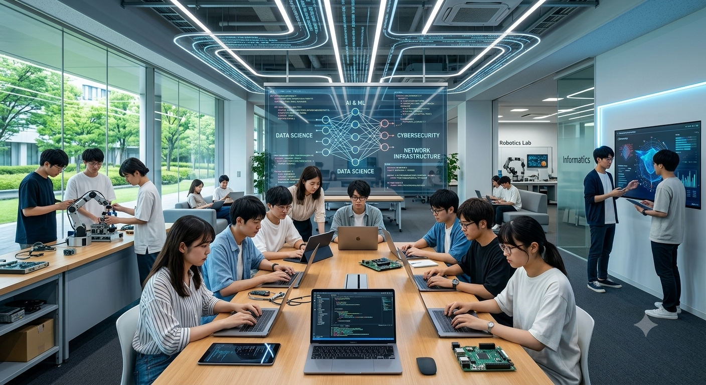
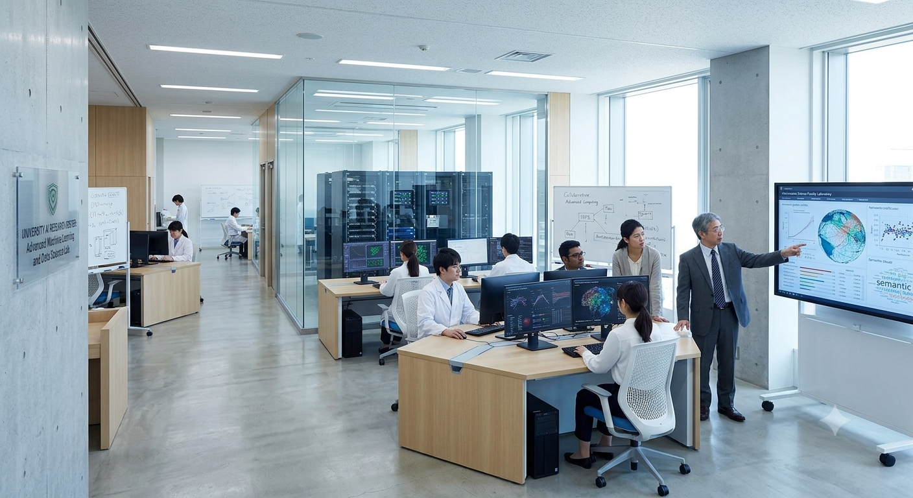
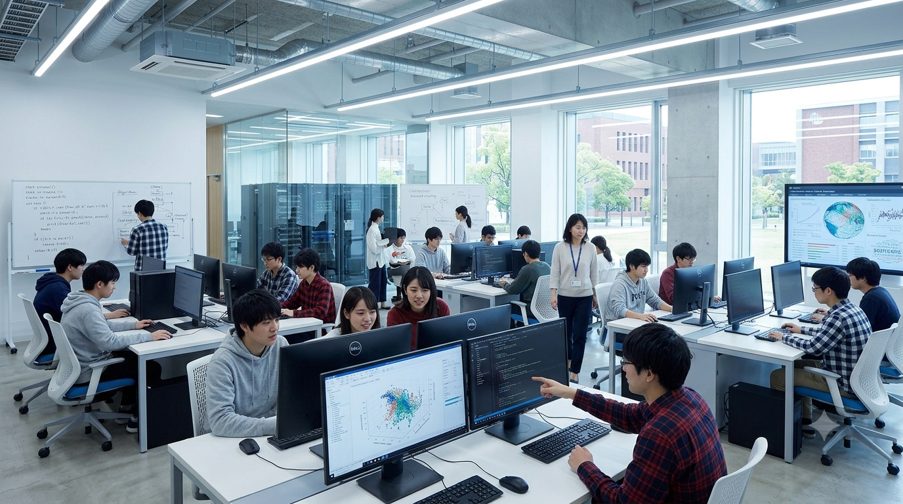
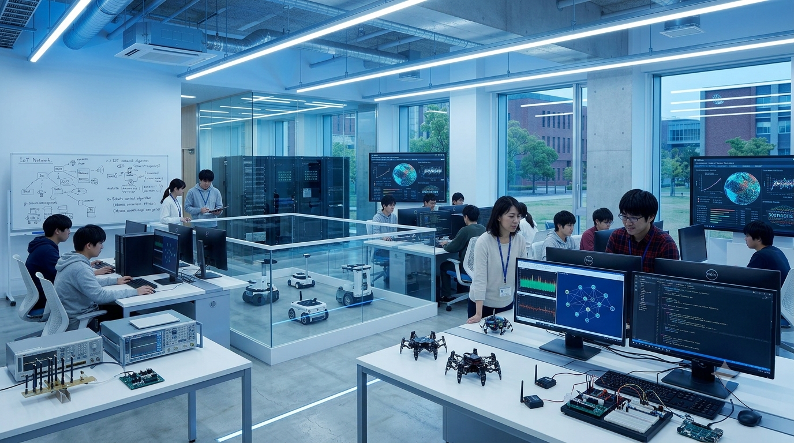

Faculty of Informatics
情報学部では、AI・データサイエンス・ サイバーセキュリティ・ネットワーク技術を 中心に、社会を支える情報システムを 創造できる人材を育成します。
未来社会を支える4つの情報技術領域
人工知能やデータ分析技術を活用し、 新しい価値を生み出します。
情報社会を守る安全技術と 防御システムを学びます。
アプリ開発やソフトウェア設計を 実践的に学びます。
クラウドや通信技術など、 社会基盤を支える技術を研究します。
情報科学・数学・プログラミング
AI・データ解析・システム開発
研究室で最先端技術を探究
卒業研究で社会課題を解決
数字から見る情報学部の学びと実績
就職率
研究プロジェクト
専門科目数
研究室数
AI・データ解析・情報システムを研究する 最先端の学習環境



「プログラミング初心者から始めましたが、 実践的な授業や研究活動を通して、 自分でシステムを作る力が身につきました。」
情報学部 3年AI研究室体験やプログラミング講座を通して、 情報技術の未来を体験できます。
学部紹介ページへ戻る